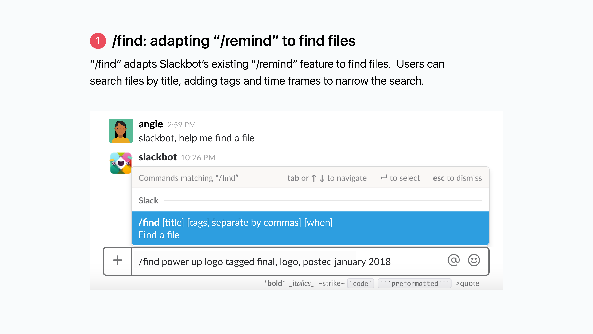
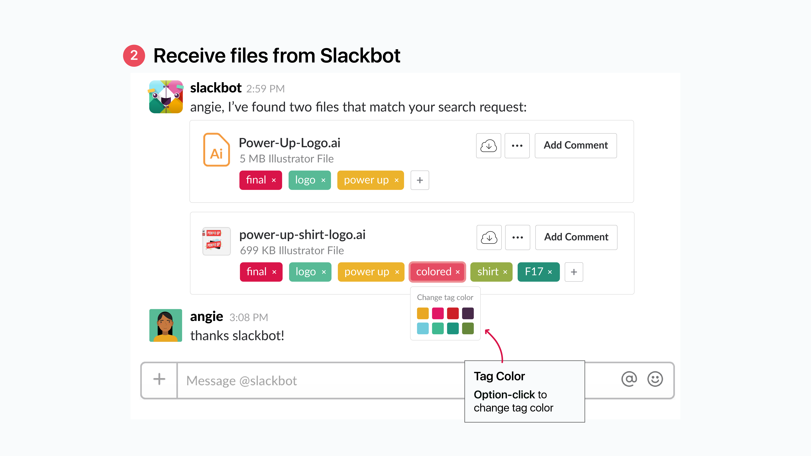
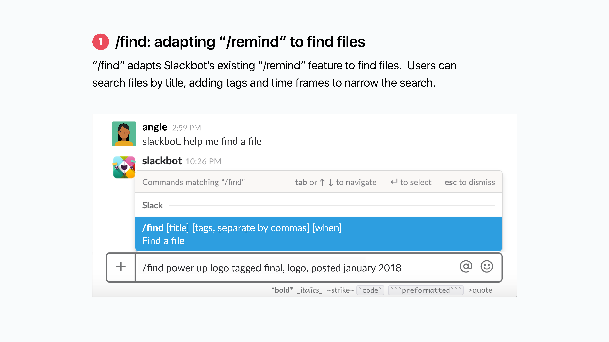
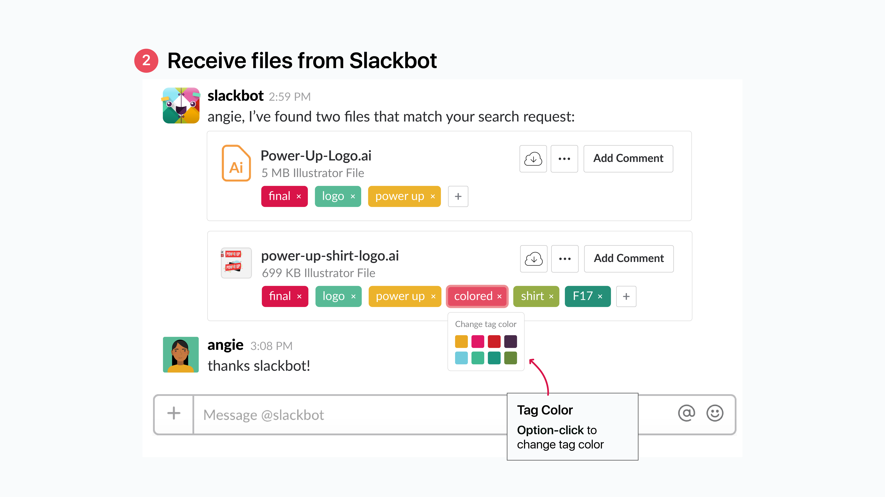

The Problem
The primary problem my teams have run into while using Slack are tied to its nature as a messaging platform — messages can sometimes get lost in a sea of channels, which makes it difficult to actively participate in conversations, or more specifically for Joanna's use case, challenging to establish a smooth design pipeline between designers and project leads requesting assets.
Joanna's Problem:
This first feature for redesign is based on personal experience with Slack, and applies to a somewhat niche set of designers who use Slack to share assets.
1. Tagging a file during upload
2. Working with a file in channel & searching for files in the info panel
3. Adding a fun use case for slackbot
 



Nathan's Problem:
I decided to also add on an extra redesign component (I'm secretly hoping this is something Slack will consider implementing) to round out the solution to the problem of "keeping track of conversations and files in Slack." Nathan is a much more generic Slack user than Joanna, and his paint point is felt by many users.
Recap:
I set out to improve the asset pipeline for designers on Slack as well as channel organization for Slack ninjas. With file tags & channel folders, I hope I've achieved a thoughtful and appropriate solution for the product & users! I definitely had lots of fun coming up with a feature redesign that I could see myself using, and I hope you had as much fun reading through this. Also, you can find a PDF version of theses slides without the annotations here.